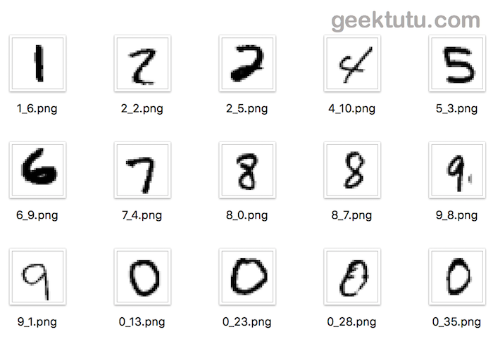

TensorFlow入门(四) - mnist手写数字识别(制作h5py训练集)
源代码/数据集已上传到
Github - tensorflow-tutorial-samples
这篇文章是 TensorFlow Tutorial 入门教程的第四篇文章。
在之前的几篇文章中，我们都是通过 tensorflow.examples.tutorials.mnist来使用mnist训练集集，制作训练集主要有2个目的，一是加快训练时读取的速度，而是支持随机批读取。假如，每次训练时，都是直接读取图片，再将图片转为矩阵进行训练，那这样效率无疑是非常低下的。
这篇文章将使用numpy 和 h5py（HDF5文件格式）2种方式来制作训练集，并对这两种方式进行对比。
准备图片 
直接读取tensorflow中mnist数据集，将数据集还原为图片。
在这里，使用 pillow库将矩阵转为图片。
1 2 3 4 5 6 7 8 9 10 11 12 13 14 15 16 17 18 import numpy as npfrom PIL import Imagefrom tensorflow.examples.tutorials.mnist import input_datadef gen_image (arr, index, label ): matrix = (np.reshape(1.0 - arr, (28 , 28 )) * 255 ).astype(np.uint8) img = Image.fromarray(matrix, 'L' ) img.save("./images/{}_{}.png" .format (label, index)) data = input_data.read_data_sets('../mnist/data_set' ) x, y = data.train.next_batch(200 ) for i, (arr, label) in enumerate (zip (x, y)): print (i, label) gen_image(arr, i, label)
这样，就得到了200张 28*28的图片供下一步制作训练集。
制作npy格式的数据集 numpy能够将矩阵保存为文件，也能从文件中读取矩阵，因此可以考虑使用numpy制作数据集。
1 2 3 4 import osimport numpy as npfrom PIL import Imagefrom sklearn.model_selection import train_test_split
1. 图片转为矩阵并保存 1 2 3 4 5 6 7 8 9 10 11 12 13 14 15 x, y = [], [] for i, image_path in enumerate (os.listdir('./images' )): label = int (image_path.split('_' )[0 ]) label_one_hot = [0 if i != label else 1 for i in range (10 )] y.append(label_one_hot) image = Image.open ('./images/{}' .format (image_path)).convert('L' ) image_arr = 1 - np.reshape(image, 784 ) / 255.0 x.append(image_arr) np.save('data_set/X.npy' , np.array(x)) np.save('data_set/Y.npy' , np.array(y))
2. 读取文件随机批处理 1 2 3 4 5 6 7 8 9 10 11 12 13 14 15 16 17 18 class DataSet : def __init__ (self ): x, y = np.load('data_set/X.npy' ), np.load('data_set/Y.npy' ) self .train_x, self .test_x, self .train_y, self .test_y = \ train_test_split(x, y, test_size=0.2 , random_state=0 ) self .train_size = len (self .train_x) def get_train_batch (self, batch_size=64 ): choice = np.random.randint(self .train_size, size=batch_size) batch_x = self .train_x[choice, :] batch_y = self .train_y[choice, :] return batch_x, batch_y def get_test_set (self ): return self .test_x, self .test_y
一般情况下，我们会用随机批梯度下降的方式去进行训练，因此需要实现随机获取 batch_size个数据的功能。
为了测试模型的泛化能力，测试集一般不与测试集交叉，常用 sklearn库中的train_test_split去分离训练数据与测试数据。
3. 如何使用 1 2 3 4 data_source = DataSet() for i in range (1000 ): train_x, train_y = data_source.get_train_batch(batch_size=32 ) // ...
制作HDF5格式的数据集 HDF 是用于存储和分发科学数据的一种自我描述、多对象文件格式。HDF 是由美国国家超级计算应用中心（NCSA）创建的，以满足不同群体的科学家在不同工程项目领域之需要。一个HDF5文件就是一个由两种基本数据对象（groups and datasets）存放多种科学数据的容器：
HDF5 group: 包含0个或多个HDF5对象以及支持元数据（metadata）的一个群组结构。
HDF5 dataset: 数据元素的一个多维数组以及支持元数据（metadata）
直观理解，一个HDF5文件可以存储多个数据（value），并用索引（key）找到，支持层级嵌套，类似于Python中的字典。
Python中h5py 来制作和使用HDF5格式的文件。
1 2 3 4 5 import osimport h5pyimport numpy as npfrom PIL import Imagefrom sklearn.model_selection import train_test_split
1. 图片转为矩阵并保存 1 2 3 4 5 6 7 8 9 10 11 12 13 14 15 16 x, y = [], [] for i, image_path in enumerate (os.listdir('./images' )): label = int (image_path.split('_' )[0 ]) label_one_hot = [0 if i != label else 1 for i in range (10 )] y.append(label_one_hot) image = Image.open ('./images/{}' .format (image_path)).convert('L' ) image_arr = 1 - np.reshape(image, 784 ) / 255.0 x.append(image_arr) with h5py.File('./data_set/data.h5' , 'w' ) as f: f.create_dataset('x_data' , data=np.array(x)) f.create_dataset('y_data' , data=np.array(y))
2. 读取文件随机批处理 1 2 3 4 5 6 7 8 9 10 11 12 13 14 15 16 17 18 19 20 class DataSet : def __init__ (self ): with h5py.File('./data_set/data.h5' , 'r' ) as f: x, y = f['x_data' ].value, f['y_data' ].value self .train_x, self .test_x, self .train_y, self .test_y = \ train_test_split(x, y, test_size=0.2 , random_state=0 ) self .train_size = len (self .train_x) def get_train_batch (self, batch_size=64 ): choice = np.random.randint(self .train_size, size=batch_size) batch_x = self .train_x[choice, :] batch_y = self .train_y[choice, :] return batch_x, batch_y def get_test_set (self ): return self .test_x, self .test_y
f[‘x_data’] 是一个datasets，拥有 name, shape, value 属性
可以看到，我们只用了1个HDF5文件就将x 和 y存下来了。假如在保存文件前对训练集和测试集进行拆分，同样能够将 train_x, train_y, test_x, test_y 一起保存在一个 HDF5文件中，使用非常方便。
npy格式与hdf5格式的对比
#
读取（1000次/ms）
存储空间（M）
npy
1204
1.3
hdf5
1665
1.3
使用 200 张 28 * 28的图片对比，可以发现在没有使用任何压缩辅助的情况下，两种格式的数据占据的磁盘空间是一样的，HDF5的读取速度比npy慢了1/3，训练集如果能一次读取内存，启动训练前的读取时间可以忽略不计，但是HDF5格式的文件因为能够存储metadata和支持层级嵌套，键索引，使用起来更方便。
觉得还不错，不要吝惜你的star ，支持是持续不断更新的动力。
上一篇 « TensorFlow入门(三) - mnist手写数字识别(可视化训练)
下一篇 » TensorFlow 2.0 (五) - mnist手写数字识别(CNN卷积神经网络)